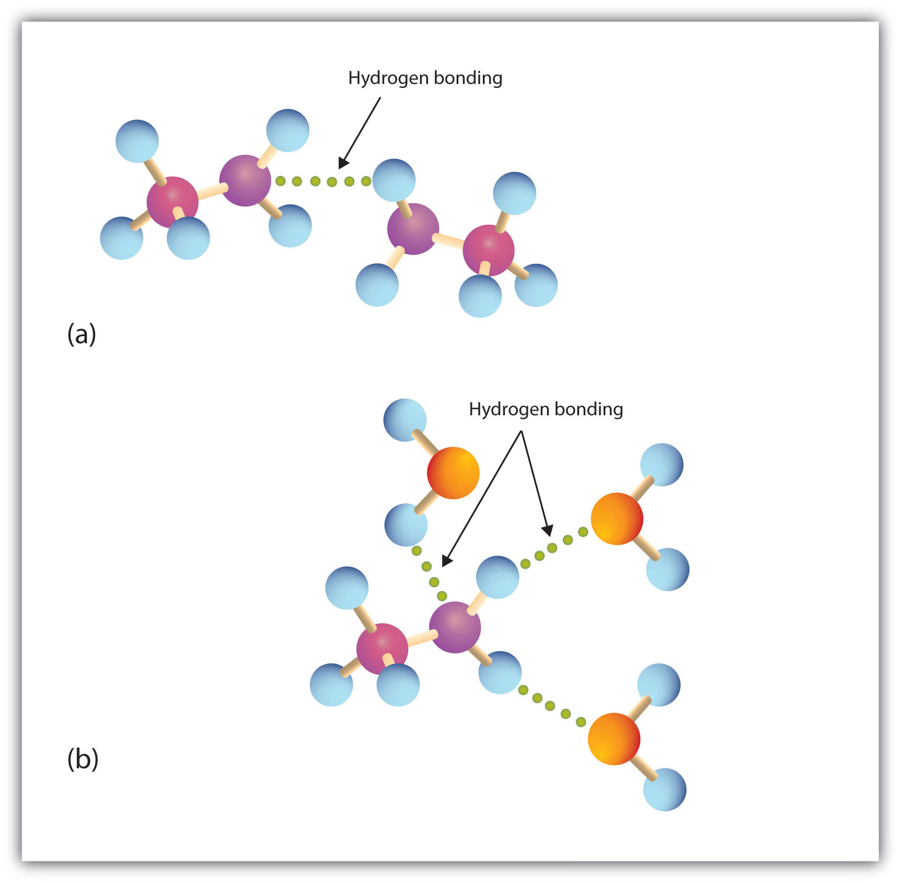

Primary and secondary amines have hydrogen atoms bonded to an nitrogen atom and are therefore capable of hydrogen bonding (part (a) of Figure 15.6 "Hydrogen Bonding"), although not as strongly as alcohol molecules (which have hydrogen atoms bonded to an oxygen atom, which is more electronegative than nitrogen). These amines boil at higher temperatures than alkanes but at lower temperatures than alcohols of comparable molar mass. For example, compare the boiling point of methylamine (CH3NH2; −6°C) with those of ethane (CH3CH3; −89°C) and methanol (CH3OH; 65°C). Tertiary amines have no hydrogen atom bonded to the nitrogen atom and so cannot participate in intermolecular hydrogen bonding. They have boiling points comparable to those of ethers (Table 15.5 "Physical Properties of Some Amines and Comparable Oxygen-Containing Compounds").
Figure 15.6 Hydrogen Bonding
(a) Amine molecules are associated through hydrogen bonding. (b) An amine molecule can form a hydrogen bond with water molecules.
Table 15.5 Physical Properties of Some Amines and Comparable Oxygen-Containing Compounds
| Name | Condensed Structural Formula | Class | Molar Mass | Boiling Point (°C) | Solubility at 25°C (g/100 g Water) |
|---|---|---|---|---|---|
| butylamine | CH3CH2CH2CH2NH2 | 1° | 73 | 78 | miscible |
| diethylamine | (CH3CH2)2NH | 2° | 73 | 55 | miscible |
| butyl alcohol | CH3CH2CH2CH2OH | — | 74 | 118 | 8 |
| dipropylamine | (CH3CH2CH2)2NH | 2° | 101 | 111 | 4 |
| triethylamine | (CH3CH2)3N | 3° | 101 | 90 | 14 |
| dipropyl ether | (CH3CH2CH2)2O | — | 102 | 91 | 0.25 |
All three classes of amines can engage in hydrogen bonding with water (part (b) of Figure 15.6 "Hydrogen Bonding"). Amines of low molar mass are quite soluble in water; the borderline of solubility in water is at five or six carbon atoms.
Amines have “interesting” odors. The simple ones smell very much like ammonia. Higher aliphatic amines smell like decaying fish. Or perhaps we should put it the other way around: Decaying fish give off odorous amines. The stench of rotting fish is due in part to two diamines: putrescine and cadaverine. They arise from the decarboxylation of ornithine and lysine, respectively, amino acids that are found in animal cells. (For more information about lysine, see Chapter 18 "Amino Acids, Proteins, and Enzymes", Section 18.1 "Properties of Amino Acids".)
Aromatic amines generally are quite toxic. They are readily absorbed through the skin, and workers must exercise caution when handling these compounds. Several aromatic amines, including β-naphthylamine, are potent carcinogens.
Which compound has the higher boiling point, CH3CH2CH2CH2CH2NH2 or CH3CH2CH2CH2CH2CH3? Explain.
Which compound is more soluble in water, CH3CH2CH2CH2CH3 or CH3CH2NHCH2CH3? Explain.
CH3CH2CH2CH2CH2NH2 because the nitrogen-to-hydrogen (N–H) bonds can engage in hydrogen bonding; CH3CH2CH2CH2CH2CH3 cannot engage in hydrogen bonding
CH3CH2NHCH2CH3 because amines can engage in hydrogen bonding with water; alkanes cannot engage in hydrogen bonding
Which compound of each pair has the higher boiling point? Explain.
Which compound of each pair has the higher boiling point? Explain.
Which compound is more soluble in water—CH3CH2CH3 or CH3CH2NH2? Explain.
Which compound is more soluble in water—CH3CH2CH2NH2 or CH3CH2CH2CH2CH2CH2NH2? Explain.
CH3CH2NH2 because amines can engage in hydrogen bonding with water; alkanes cannot engage in hydrogen bonding